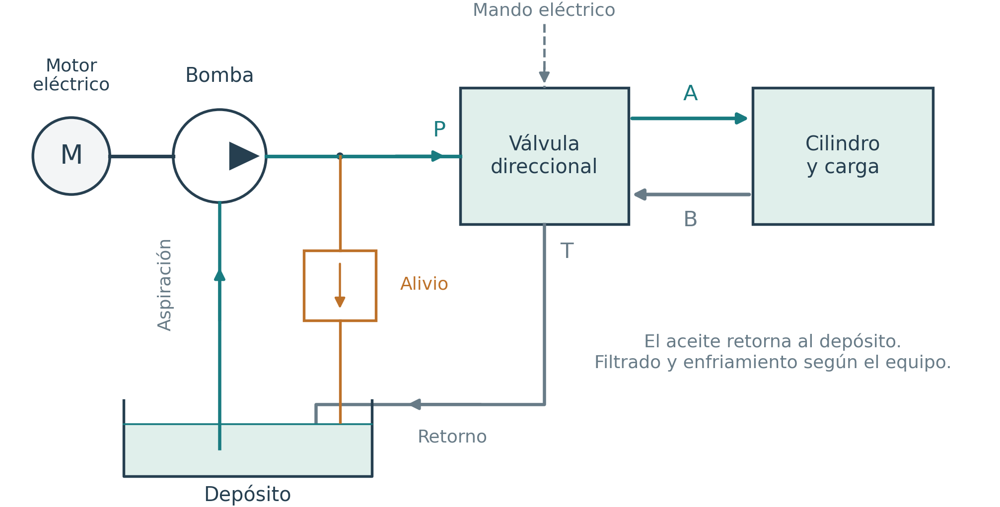
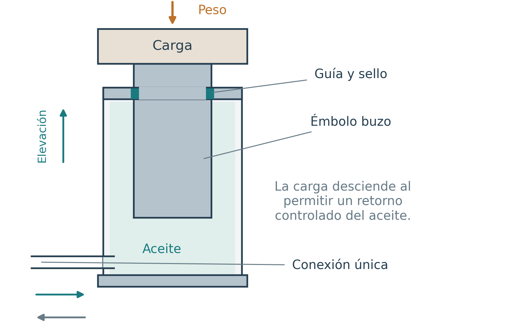
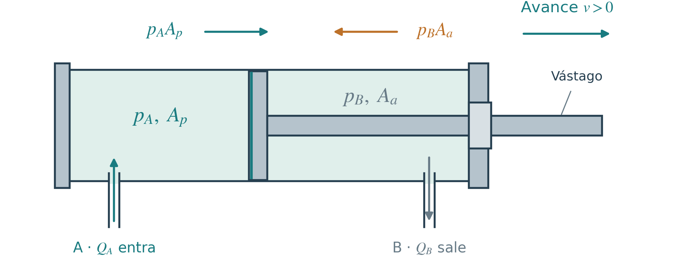
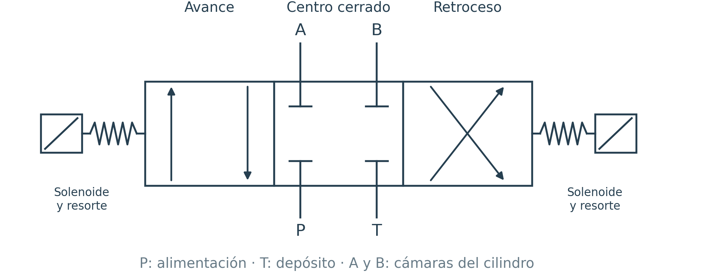
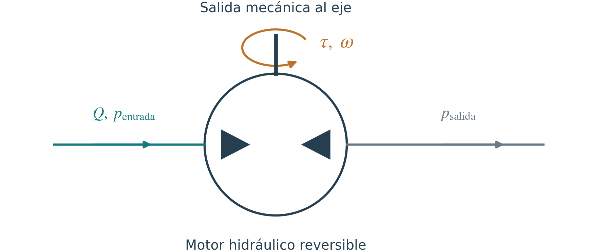
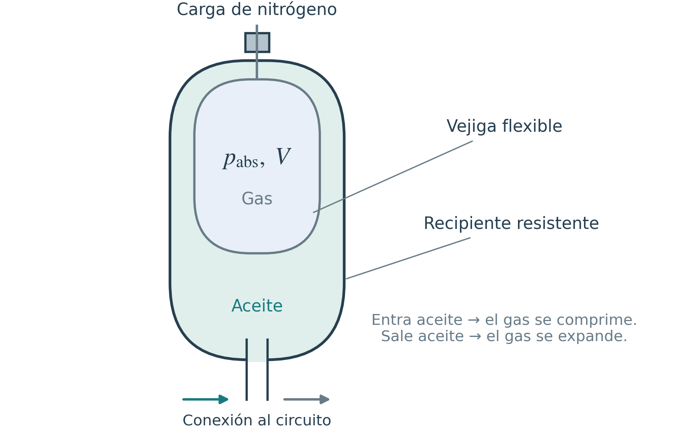
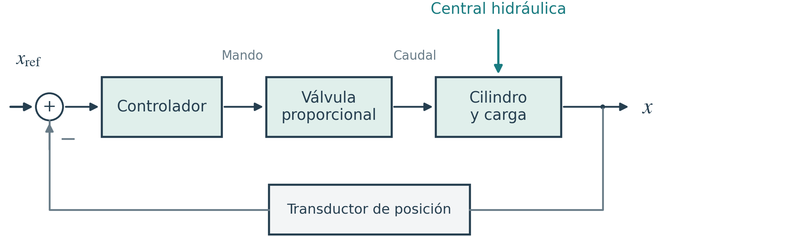

Instrumentación
Actuadores hidráulicos: fuerza y movimiento bajo control
Cómo un líquido presurizado permite desplazar cargas, producir giro y regular acciones mecánicas en un sistema mecatrónico.
Los actuadores hidráulicos convierten la energía de un líquido presurizado en fuerza y movimiento. Su capacidad para accionar cargas importantes con mecanismos compactos explica su presencia en prensas, equipos de elevación, maquinaria móvil y bancos de ensayo. Para comprenderlos es necesario relacionar la presión con la fuerza, el caudal con la velocidad y ambas magnitudes con la potencia. A partir de estas relaciones estudiaremos los cilindros de simple y doble efecto, los actuadores giratorios y los motores hidráulicos, junto con las válvulas y los acumuladores que condicionan su funcionamiento. Los ejemplos de cálculo y la selección de sensores permitirán vincular el dimensionamiento mecánico con el control y la instrumentación del proceso.
Del mando eléctrico al trabajo mecánico
Una prensa debe aproximar una herramienta, aplicar una fuerza considerable y retirarla una vez terminada la operación. El controlador puede generar las órdenes eléctricas de esa secuencia, pero necesita una fuente de energía y un mecanismo que las convierta en trabajo sobre la pieza. En un accionamiento hidráulico, una bomba alimenta el circuito con líquido y una válvula dirige ese líquido hacia un cilindro o un motor. El actuador transforma la energía recibida en desplazamiento lineal o en giro.
La hidráulica de potencia utiliza líquidos para transmitir energía, habitualmente mediante aceites que también lubrican los componentes. Existen fluidos acuosos, resistentes al fuego y biodegradables para aplicaciones particulares; el fluido se selecciona junto con los sellos, la temperatura y las condiciones de servicio. Aunque el agua que circula por una tubería también pertenece al estudio de la hidráulica, aquí nos ocuparemos de los circuitos destinados a accionar máquinas.
Los cilindros de una excavadora, el accionamiento de una prensa, la orientación de una compuerta y el movimiento de un banco de pruebas comparten este principio. La elevada fuerza por unidad de tamaño favorece la solución hidráulica cuando las cargas son grandes o los esfuerzos cambian durante la operación. A cambio, el conjunto requiere controlar la limpieza del fluido, las fugas, la temperatura y la energía almacenada bajo presión.
La central hidráulica y el recorrido del aceite
La central hidráulica reúne los elementos de suministro y acondicionamiento. En un circuito abierto al depósito, como el de la figura 1, un motor eléctrico acciona una bomba que aspira aceite del depósito y lo entrega a la línea de alimentación. La válvula direccional conecta esta línea con la cámara que debe recibir aceite y establece el retorno desde la otra cámara. El fluido vuelve al depósito para utilizarse de nuevo.

La bomba entrega caudal; la presión que se desarrolla depende de la carga y de las resistencias al paso del aceite. Una bomba de desplazamiento fijo que alimenta un conducto bloqueado no deja de impulsar líquido por sí sola. La presión aumenta hasta que actúa el alivio, se modifica el suministro mediante otro dispositivo o se alcanza un límite del equipo. Por ello, el mando de la bomba y las válvulas deben concebirse como parte del mismo circuito.
Las bombas de desplazamiento positivo trasladan un volumen geométrico por vuelta, con pérdidas debidas a fugas internas. Las de engranajes transportan el aceite entre los dientes y la carcasa; las de paletas emplean elementos deslizantes en un rotor, y las de pistones modifican cíclicamente el volumen de sus cámaras. Algunas bombas de pistones permiten variar el desplazamiento para adaptar el suministro a la demanda.
El depósito proporciona una reserva de fluido y favorece la disipación térmica y la separación del aire. Los filtros retienen partículas y, cuando el balance térmico lo exige, un enfriador extrae calor del circuito. Una válvula de retención permite el paso en un sentido y lo bloquea en el contrario. Estos componentes acondicionan o encaminan el fluido; el actuador es el elemento que realiza la acción mecánica sobre la carga.
Presión para ejercer fuerza, caudal para moverse
La presión expresa fuerza por unidad de superficie. Si una superficie de área efectiva $A$ separa dos regiones con una diferencia de presión $\Delta p$, la fuerza ideal resultante es
Con la presión en pascales y el área en metros cuadrados se obtiene la fuerza en newtons. En hidráulica es habitual utilizar bar, donde $1\,\mathrm{bar}=10^5\,\mathrm{Pa}$, o megapascales, con $1\,\mathrm{MPa}=10\,\mathrm{bar}$. Un émbolo de 50 mm de diámetro tiene un área de aproximadamente $1.9635\times10^{-3}$ m². A 150 bar puede desarrollar una fuerza ideal de 29.45 kN si el lado opuesto descarga a presión manométrica nula.
La presión manométrica se mide respecto a la atmósfera local; la absoluta, respecto al vacío. En los balances de fuerza siguientes utilizaremos presiones manométricas. Cuando aparezca un gas, como el de un acumulador, se utilizará su presión absoluta, relacionada con la anterior mediante $p_{\mathrm{abs}}=p_g+p_{\mathrm{atm}}$.
Para mover el émbolo también debe entrar un volumen de líquido. El caudal volumétrico $Q$ es el volumen que atraviesa una sección por unidad de tiempo. Si el aceite se considera incompresible, no hay fugas y el área es constante,
Un litro por minuto equivale a $1.6667\times10^{-5}$ m³/s. Aumentar el área permite obtener más fuerza con la misma presión, pero reduce la velocidad cuando el caudal disponible permanece constante. Por eso no basta con escoger un cilindro que soporte la carga; también hay que comprobar que complete el recorrido en el tiempo requerido.
Una presión elevada no implica movimiento. Un cilindro puede sostener una carga sin desplazarse, mientras una línea con gran caudal y poca presión puede transportar aceite sin ejercer una fuerza importante. Presión y caudal describen aspectos diferentes del accionamiento y deben interpretarse conjuntamente.
La potencia disponible y sus pérdidas
La potencia hidráulica transmitida entre dos puertos con diferencia de presión $\Delta p$ y caudal $Q$ es
Para un actuador ideal de igual área en ambas caras, las relaciones anteriores conducen a $P_h=Fv$. Una mayor fuerza y una mayor velocidad exigen más potencia; una transmisión hidráulica puede intercambiar fuerza por velocidad, pero no multiplicar ambas sin aumentar la energía suministrada. En un cilindro de áreas desiguales, el balance se escribe considerando por separado la potencia que entra y sale por cada cámara.
El motor eléctrico debe aportar además las pérdidas de la bomba y del circuito. Si el caudal atraviesa una restricción con caída de presión $\Delta p_v$, se disipa aproximadamente una potencia $P_{\mathrm{pérdida}}=\Delta p_v Q$. Con 12 L/min y una caída de 30 bar, esa pérdida es de 0.60 kW. El calor resultante explica por qué estrangular continuamente un caudal o descargarlo por el alivio puede calentar el depósito aunque la máquina realice poco trabajo útil.
Cilindros de simple efecto
Un cilindro de simple efecto utiliza la presión hidráulica para producir trabajo en un solo sentido. El regreso depende de un resorte, del peso de la carga o de otra fuerza externa. La figura 2 muestra una configuración de émbolo buzo, en la que un elemento macizo se desplaza por una guía sellada. El aceite que entra eleva el émbolo y la carga; para descender, el mismo puerto debe permitir la salida controlada del líquido.

Si el área transversal del émbolo buzo es $A_b$, la fuerza ascendente ideal es $p_g A_b$. Para elevar una masa $M$ con aceleración vertical $\ddot{x}$, despreciando otras cargas y representando la fricción durante la subida por $F_f$, se requiere
Durante el descenso, la gravedad puede impulsar el movimiento. Abrir una comunicación amplia al depósito sin regular la salida permitiría que la carga adquiriera una velocidad excesiva. La forma de retenerla y controlar su bajada es parte del diseño, incluso si la elevación se resuelve con un cilindro sencillo. Los gatos, ciertos elevadores y los mecanismos de volteo emplean variantes de este principio.
Cilindros de doble efecto y superficies útiles
En un cilindro de doble efecto, el émbolo separa dos cámaras que pueden recibir aceite presurizado. El vástago transmite la fuerza al mecanismo exterior. Para avanzar se alimenta la cámara posterior y se permite el retorno desde la cámara del vástago; al invertir las conexiones, el cilindro se retrae. Así puede realizar trabajo en ambos sentidos.

Si el diámetro interior del cilindro es $D$ y el diámetro del vástago es $d$, el área completa del émbolo $A_p$, el área del vástago $A_r$ y el área anular $A_a$ son
Con el sentido positivo hacia la extensión y presiones manométricas $p_A$ y $p_B$, la fuerza hidráulica neta es
La contrapresión del retorno reduce la fuerza de avance, aunque esa cámara esté conectada al depósito a través de una válvula. Además, una parte de $F_h$ vence la fricción y otra puede acelerar la masa. Durante un avance con carga resistente $F_L$,
Esta ecuación permite distinguir la fuerza hidráulica calculada con presiones de la fuerza que realmente recibe la carga. El término $F_f$ se ha escrito como una resistencia positiva durante el avance; para modelar inversiones de movimiento debe cambiar su sentido de acuerdo con la velocidad y considerar, cuando sea necesario, la fricción de arranque.
Si se desprecian compresibilidad y fugas, en un avance a velocidad $v$ los caudales son
El caudal que sale es menor que el que entra. En el retroceso se invierte la situación, porque se alimenta el área anular y se vacía la cámara de área completa. Esto importa al dimensionar la válvula y la tubería de retorno, cuyo caudal puede superar al de la bomba.
Un ejemplo de dimensionamiento
Supongamos que una estación debe empujar una carga resistente de 15 kN a lo largo de 250 mm. Se estudia un cilindro con diámetro $D=50$ mm y vástago de $d=30$ mm. Durante el avance se dispone de 100 bar en la cámara A, mientras la cámara B presenta una contrapresión de 5 bar. Estimaremos la fricción en 500 N y utilizaremos un caudal de entrada de 12 L/min.
Las superficies útiles calculadas con los diámetros son
A velocidad constante, la fuerza que podría equilibrar una carga resistente, una vez descontada la fricción, es
El resultado supera los 15 kN requeridos. Representa una capacidad en las condiciones de presión supuestas; si la carga es menor, la presión real puede disminuir o la fuerza sobrante puede producir aceleración. La selección definitiva debe contemplar variaciones de carga, pérdidas de presión, montaje y pandeo del vástago, que es su posible inestabilidad lateral bajo compresión.
Con $Q=2.0\times10^{-4}$ m³/s, la velocidad ideal de avance y el tiempo de recorrido uniforme son
Para comparar ambas carreras, supongamos ahora que durante la retracción se mantienen 100 bar en B, 5 bar en A y el mismo caudal de entrada. La tabla 1 reúne los resultados, considerando de nuevo 500 N de fricción en oposición al movimiento.
El retroceso resulta más rápido, pero ofrece menos fuerza. Los tiempos no incluyen aceleración, desaceleración ni amortiguación al final de carrera. La estimación de potencia de alimentación a 100 bar y 12 L/min es de 2 kW; el motor que accione la bomba debe cubrir además las pérdidas y el régimen de trabajo previsto.
Otras configuraciones de cilindros
Un cilindro de doble vástago puede presentar áreas anulares iguales en ambos lados si los vástagos tienen el mismo diámetro. Esto facilita obtener fuerzas y velocidades simétricas al invertir el movimiento. La instalación necesita espacio para la salida de ambos extremos, por lo que la ventaja geométrica debe valorarse junto con el montaje.
Los cilindros telescópicos contienen varias etapas concéntricas para conseguir una carrera larga a partir de una longitud recogida relativamente corta. Se utilizan, por ejemplo, en plataformas y mecanismos de volteo. Al cambiar la etapa activa cambia el área efectiva, de modo que también pueden cambiar la fuerza y la velocidad con la misma presión y caudal. Existen versiones de simple y doble efecto.
Los cilindros tándem acoplan varios pistones a una misma salida para sumar fuerzas sin aumentar tanto el diámetro. En todos los casos se debe respetar la función de las guías exteriores de la máquina. El vástago transmite principalmente esfuerzos axiales; una carga lateral o una desalineación aumentan el desgaste y pueden comprometer el movimiento.
Dirigir el movimiento con válvulas
Una válvula direccional modifica las conexiones entre alimentación, retorno y actuador. Su designación indica el número de vías y el de posiciones. Una válvula 4/3 tiene cuatro conexiones principales y tres posiciones. Habitualmente se identifican como P la alimentación, T el retorno al depósito y A y B las conexiones del actuador.

En la figura 4, una posición conecta P con A y B con T, y la contraria conecta P con B y A con T. El cuadro central bloquea las cuatro vías. En el símbolo, las conexiones exteriores se dibujan junto al cuadro de referencia; al cambiar de posición se interpreta que el cuadro seleccionado ocupa ese lugar. Los resortes centran el distribuidor cuando desaparece el accionamiento correspondiente.
El centro cerrado interrumpe nominalmente el paso por A y B, pero la fuga interna de una válvula de carrete puede permitir una deriva lenta del cilindro. Tampoco debe conectarse sin más a una bomba de desplazamiento fijo que permanezca entregando caudal. Hace falta una estrategia de descarga, regulación o variación del suministro; de lo contrario, el caudal puede circular continuamente por el alivio y generar calor.
Existen otros centros. En un centro tándem, P comunica con T mientras A y B quedan bloqueadas; en uno flotante, A y B comunican con T y P queda bloqueada. Sus efectos sobre la carga y la bomba son distintos. La posición central se elige a partir del comportamiento que debe tener la máquina al detenerse, no solo por el número de conexiones de la válvula.
La válvula de alivio limita la presión aguas arriba al abrir una ruta de descarga. Una reductora de presión mantiene una presión menor en una rama aguas abajo, dentro de sus condiciones de funcionamiento. Una válvula de secuencia habilita una comunicación cuando se alcanza cierta presión. Ninguna de estas funciones confirma, por sí misma, que un cilindro haya llegado a su posición final.
Regular la velocidad y sostener una carga
Para regular la velocidad se controla el caudal que entra o sale del actuador. Una abertura variable estrangula el paso del aceite. Para un orificio en régimen predominantemente turbulento puede utilizarse la aproximación
donde $C_d$ es el coeficiente de descarga, $A_v$ el área de abertura, $\Delta p_v$ la caída de presión en la válvula y $\rho$ la densidad del líquido. Esta relación muestra que una abertura fija no garantiza caudal constante cuando cambia la carga. Un regulador con compensación de presión intenta mantener aproximadamente constante la caída de presión en la sección dosificadora, dentro de su intervalo de operación.
Una carga que se opone al movimiento puede regularse de forma distinta de otra que lo impulsa, como ocurre durante el descenso de una plataforma. En este último caso hay que evitar que la carga arrastre al actuador más rápido de lo que se alimenta la cámara opuesta. Esa condición puede provocar pérdida de control y una presión demasiado baja para mantener el aceite continuo.
Una válvula de contrabalance permite retener una carga y modular su salida durante el movimiento. Una retención pilotada bloquea un sentido de paso hasta recibir una presión de apertura por una conexión auxiliar de mando, llamada pilotaje. Esta última se emplea para bloqueo, pero no equivale a una válvula modulante para controlar un descenso suave. Su selección e instalación dependen de la carga, las presiones y la estabilidad del circuito (Sun Hydraulics, 2023).
En los ejes que elevan personas, herramientas o masas importantes, la retención se resuelve cerca del actuador y se considera también el efecto de una rotura de conducción. La inmovilidad requerida puede exigir un bloqueo mecánico adicional. La decisión pertenece al diseño de la máquina y no se deduce únicamente de que el símbolo direccional tenga A y B cerradas.
Actuadores giratorios y motores hidráulicos
El movimiento hidráulico también puede ser angular. Un actuador giratorio de recorrido limitado convierte el desplazamiento de uno o varios pistones en giro mediante una cremallera y un piñón, un mecanismo helicoidal u otra transmisión. También puede utilizar una paleta que separa cámaras dentro de una carcasa. Su salida recorre un ángulo definido y resulta útil para orientar herramientas, abrir compuertas o posicionar mesas.
Un motor hidráulico, en cambio, está diseñado para producir rotación continua. Los motores de engranajes, orbitales, de paletas y de pistones emplean distintas geometrías para convertir el caudal y la diferencia de presión en movimiento del eje. La bomba recibe trabajo mecánico y entrega energía al líquido; el motor realiza la conversión inversa, aunque un componente no debe utilizarse indistintamente en ambas funciones sin verificar que su diseño lo permita.

El desplazamiento volumétrico $V_d$ es el volumen geométrico que corresponde a una vuelta del eje. En funcionamiento como motor, la eficiencia volumétrica $\eta_v$ representa la fracción del caudal suministrado que contribuye al giro, y la eficiencia hidromecánica $\eta_m$ relaciona el par real con el ideal. Para una condición de operación dada,
Si $Q$ se expresa en m³/s y $V_d$ en m³ por vuelta, $n$ queda en vueltas por segundo, $\omega$ en rad/s y $\tau$ en N·m. La diferencia $\Delta p$ se toma entre los puertos del motor. Al utilizar litros por minuto y litros por vuelta, la misma relación para $n$ entrega directamente revoluciones por minuto.
Por ejemplo, con $V_d=50$ cm³ por vuelta, $Q=15$ L/min, $\eta_v=0.90$, $\Delta p=80$ bar y $\eta_m=0.85$, se obtiene
La potencia hidráulica es 2 kW y la potencia mecánica $\tau\omega$ es aproximadamente 1.53 kW. Su cociente, $\eta_v\eta_m=0.765$, concuerda con las eficiencias supuestas. Los valores reales cambian con la presión, la velocidad y la temperatura; la selección requiere las curvas del fabricante, incluidos los límites de arranque y de funcionamiento continuo (Danfoss, 2021).
Estos motores accionan transportadores, mezcladores, cabrestantes y mecanismos de maquinaria móvil. Si la carga puede impulsar el eje, como en un cabrestante que baja un peso, también se necesita controlar el frenado y la retención. Cuando el fabricante especifica un drenaje de carcasa, su conexión y contrapresión admisible se consideran aparte de los dos puertos principales.
El acumulador y la energía almacenada
Un acumulador hidráulico almacena energía al recibir líquido contra una fuerza que luego puede devolverlo al circuito. En un acumulador hidroneumático esa fuerza procede de un gas comprimido, habitualmente nitrógeno, separado del aceite por una vejiga, un diafragma o un pistón. El acumulador puede cubrir demandas breves de caudal, amortiguar pulsaciones o mantener presión durante ciertos intervalos.

La precarga es la presión inicial del gas con el lado hidráulico descargado, a una temperatura especificada. Cuando la presión del circuito supera la condición necesaria para admitir aceite, este entra y comprime el gas. La relación entre presión y volumen puede aproximarse mediante una ley politrópica,
El exponente $\kappa$ describe el intercambio térmico. Un proceso lento se aproxima al caso isotérmico, $\kappa=1$; uno rápido puede aproximarse al adiabático, cercano a $\kappa=1.4$ para nitrógeno en condiciones ideales. Si $p_2>p_1$, el gas ocupa un volumen menor $V_2$ y la diferencia $V_1-V_2$ corresponde al volumen de aceite recibido entre esos estados.
El acumulador no crea energía ni mantiene una presión perfectamente constante durante toda la descarga. Su capacidad útil depende de la precarga, los límites de presión y la temperatura. Puede conservar energía con la bomba apagada, por lo que su aislamiento y descarga controlada forman parte de la instalación (HYDAC, 2022).
La rigidez del aceite tiene un límite
Frente al aire, el aceite es poco compresible. Esta propiedad favorece la rigidez del accionamiento, entendida como su resistencia a cambiar de posición cuando varía la carga. Sin embargo, el líquido se comprime ligeramente, las mangueras se dilatan y el aire atrapado puede aumentar mucho la deformación del conjunto.
El módulo volumétrico efectivo $\beta_e$ relaciona, en una aproximación local, el cambio de presión con el cambio de volumen del fluido confinado y su envolvente,
El signo negativo indica que un aumento de presión reduce el volumen. Por ejemplo, con $V=1$ L, $\beta_e=1.0$ GPa y un incremento de 100 bar, la reducción estimada es de 10 mL. Aunque sea pequeña, esa cantidad puede producir un desplazamiento apreciable al liberarse o retrasar el establecimiento de presión al iniciar una maniobra.
Para estudiar transitorios de una cámara que aumenta su volumen al avanzar el pistón, una forma simplificada de la continuidad es
El caudal de entrada se reparte entre desplazamiento del pistón, compresión del fluido y fuga neta desde esa cámara. La ecuación supone temperatura aproximadamente constante y agrupa la flexibilidad en $\beta_e$. Cuando la presión apenas cambia y la fuga es pequeña, recuperamos $Q_A\approx A_p\dot{x}$. Esta transición explica por qué las relaciones estáticas son útiles para dimensionar, pero no describen por sí solas las oscilaciones o la respuesta rápida de un eje hidráulico.
Instrumentación y control del actuador
Una electroválvula de posiciones definidas puede bastar para llevar un cilindro entre dos extremos. Si se necesita regular una trayectoria o mantener una fuerza, se utiliza con frecuencia una válvula proporcional, cuya abertura varía de manera continua mediante un mando eléctrico. Una servoválvula está concebida para regulación dinámica exigente, a menudo mediante etapas de pilotaje y realimentación interna. La respuesta final depende de todo el conjunto, no solo de la denominación de la válvula.
En un lazo cerrado, el controlador compara una referencia con una medición y modifica el mando para reducir la diferencia. La figura 7 muestra el principio aplicado a la posición. El transductor informa dónde está realmente el vástago, mientras la válvula modifica el caudal que entra y sale para corregir su movimiento.

La posición puede medirse con un transductor magnetostrictivo, un LVDT —transformador diferencial de desplazamiento lineal— u otro sensor compatible con la geometría y el entorno. Los finales de carrera solo detectan posiciones particulares. Para un motor se utiliza un encoder o un sensor de velocidad, según la variable que se quiera regular.
Medir las presiones de ambas cámaras permite estimar la fuerza hidráulica con $F_h=p_A A_p-p_B A_a$. Para conocer la fuerza de contacto con buena exactitud puede ser necesaria una celda de carga, porque la fricción, la aceleración y la transmisión mecánica separan esa estimación de la fuerza realmente aplicada a la pieza.
En una prensa, la secuencia puede comenzar con aproximación regulada en posición o velocidad. Tras detectar el contacto, se cambia a control de fuerza durante el prensado y finalmente se ordena el retorno. El cambio entre modos debe evitar saltos de mando y contemplar la energía almacenada en el fluido. Una subida de presión sin avance puede indicar contacto, un tope o un atasco; la interpretación requiere combinar las mediciones y el estado de la secuencia.
Seleccionar el conjunto para la tarea
El dimensionamiento comienza por la fuerza o el par, el recorrido, la velocidad, las aceleraciones y el ciclo de trabajo. Con esos requisitos se eligen las superficies o el desplazamiento volumétrico del actuador y se estiman presión, caudal y potencia. Después se comprueban las pérdidas de las conducciones, la capacidad de las válvulas, los caudales de retorno y las condiciones de la bomba.
La selección mecánica incluye las articulaciones, la alineación, las cargas laterales y la estabilidad del vástago. Cuando la masa debe detenerse al final de carrera, la amortiguación del cilindro o una desaceleración controlada reducen el impacto. Para un motor también se comprueban las cargas sobre el eje y la capacidad de frenado del mecanismo.
La limpieza y la temperatura afectan directamente al control. Las partículas desgastan sellos y superficies de ajuste; la viscosidad cambia con la temperatura y modifica las fugas y las pérdidas. La cavitación aparece cuando la presión local cae lo suficiente para formar vapor, cuyas cavidades pueden colapsar al recuperar presión. El aire incorporado al aceite produce otro problema, la aireación, que aumenta la compresibilidad y puede volver irregular el movimiento. Una aspiración adecuada, el retorno bien dispuesto y el purgado contribuyen a evitar estas condiciones.
La hidráulica permite aplicar grandes esfuerzos con movimientos regulados cuando se diseña como un conjunto de suministro, mando, actuador y medición. Conocer qué presión actúa sobre cada superficie, cuánto aceite debe desplazarse y qué sensor confirma la acción proporciona una base para seleccionar y evaluar el accionamiento en una máquina mecatrónica.
Referencias
- Bolton, W. (2017). Mecatrónica: Sistemas de control electrónico en la ingeniería mecánica y eléctrica. Un enfoque multidisciplinario (6.ª ed., cap. 7, «Sistemas de actuación neumática e hidráulica», pp. 165–187). Alfaomega.
- Danfoss. (2021, diciembre). Orbital motors: General. Technical information (BC152886483554en-000401).
- HYDAC. (2022, 20 de enero). How an accumulator works.
- Sun Hydraulics. (2023, junio). Counterbalance & pilot-to-open check cartridges [Nota técnica].